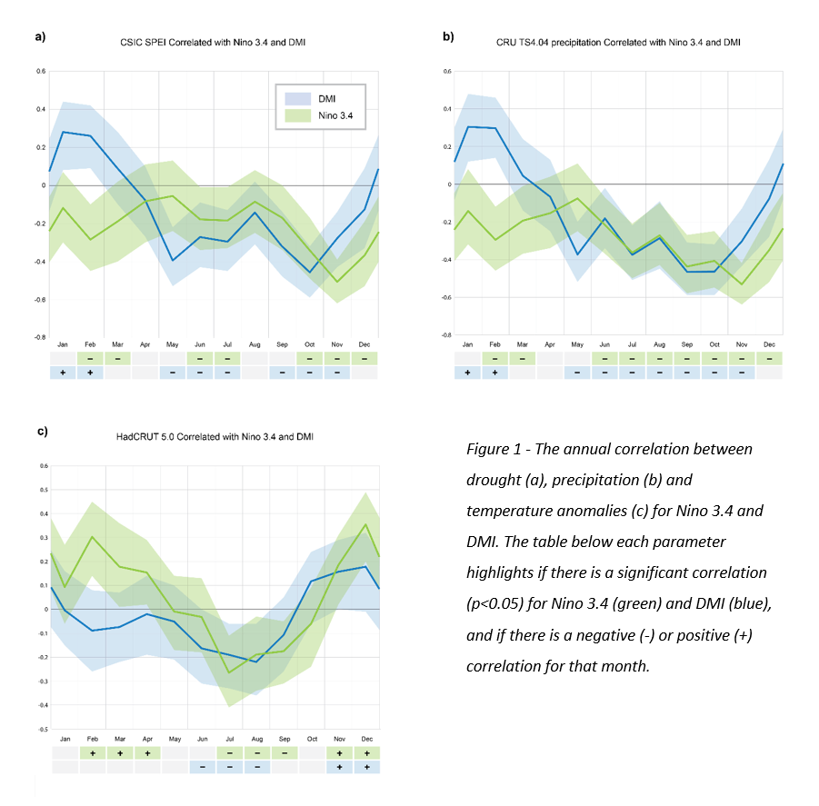
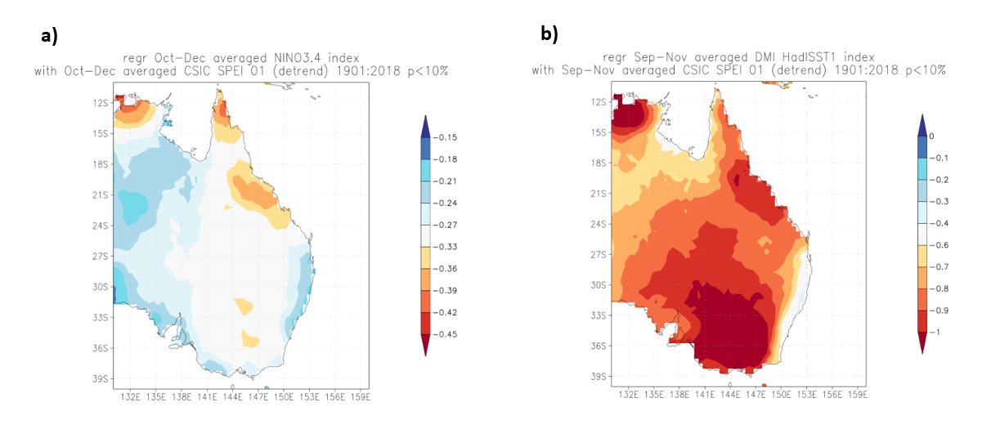
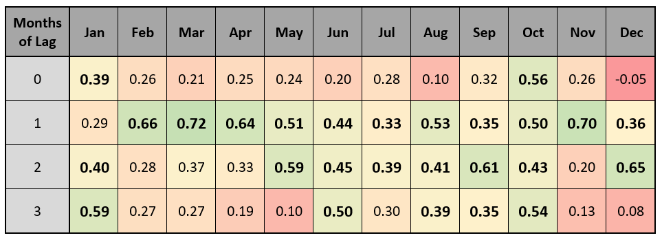
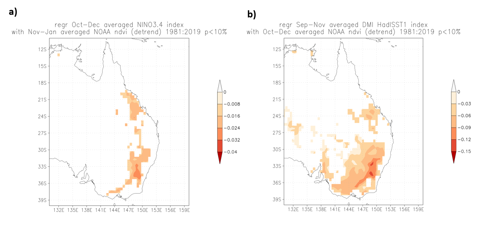

Word Count: 1498
Australian climate is influenced by different modes of climate variability, including ENSO and IOD.
Previous studies have found connections between the positive and negative states of these modes, and the precipitation and
temperature anomalies in Australia. The region of 40oS to 10oS and 130oE to 160oE was selected in eastern Australia, and
correlations between ENSO/IOD with temperature, precipitation and drought were found, where a positive ENSO and IOD respectively
lead to drier conditions between September-November. The strongest of these correlations was found to occur in southeast Australia,
where there is large agricultural area and population. Vegetation cover was found to lag drought by 1 month in the study region,
with a decrease in correlation over longer lag periods.
Furthermore, ENSO/IOD were found to be significantly correlated with a reduction of vegetation cover when a 1-month lag was applied.
My Role: Researcher
Australia’s climate can be characterised by recurrent droughts, with precipitation variability as one of its key drivers (Kiem et al., 2016). High temperatures are thought to contribute too (Murphy et al., 2007), although the extent of their influence is contentious as it has been argued that high temperatures can be a result of drought, rather than a contributor (Sheffield et al., 2012; Lockart et al., 2009). It is well understood that El-Nino Southern Oscillation (ENSO) is highly influential on Australia’s climate variability (Power et al., 1999; Shulmeister et al., 1995; Power et al., 2006) and more recently it is clear that the Indian Ocean Dipole (IOD) is a significant influencer of climate variability too (Risbey et al., 2009; Forootan et al., 2016). The Australian population and agricultural industries are predominantly based in the South East and South West (Australian Gov). It is estimated that the global cost of drought is USD 80 billion per year (WMO, 2017), furthermore future warming scenarios will lead to increased extreme weather events such as drought (IPCC, 2014), thus exacerbating the cost of drought. It is thought that Australia’s native vegetation has adapted to such climate variability, whereas introduced crops may not have such resilience (Nicholis et al., 1991). The aim of this study is to understand the relationship between the modes of climate variability (ENSO and IOD) and key vegetation parameters (drought indices, precipitation, temperature and vegetation indices) for the region of 40oS to 10oS and 130oE to 160oE across Eastern Australia.
The data was obtained and analysed within the KNMI Climate Explorer. Drought data was derived from the CSIC SPEI drought
index for the period 1901-2018 (Beguería et al., 2020) where a positive value indicates wetter conditions and negative value indicates drier conditions.
The precipitation data was obtained through CRU TS v4.04 at 0.5o steps for the period 1901-2019 (Harris et al., 2020) and the temperature data was
obtained from the HadCRUT5 median anomalies for the period of 1850-2018 (Morice et al., 2020). The vegetation data was derived from NOAA Climate
Data Record of Normalised Difference Vegetation Index (NDVI) from 1981-2020 (Vermote et al., 2019) at 0.5o steps. Nino 3.4 was used from the ERSST
v4 dataset (Huang et al., 2015), that represents the sea surface temperature anomalies across the Pacific Ocean (5oS to 5oN, 170oW to 120oW) for the
period 1880-2020. The Dipole Mode Index (DMI) was selected from the HadISST1 dataset (Rayner et al., 2003), that calculates the difference between
the Western Indian Ocean (10oS to 10oN, 50oE to 70oE) and Eastern Indian Ocean (10oS to 0oN, 90oE to 110oE) for the period of 1870-2020.
SPEI, CRU TS Precipitation and HadCRUT5 temperature were made into time series, using the average and demanding at least 30% valid points in the region.
Each time series was then correlated with Nino 3.4 and DMI for each month of the year and detrended to remove any noise from global temperature increase.
The months with the strongest correlation for drought were selected for each mode (Oct-Dec for Nino 3.4 and Sept-Nov for DMI) and were linearly regressed
with each mode to show the spatial distribution of the correlation.
The lag in response of vegetation to drought conditions was also explored, to investigate how long it would take the vegetation to respond to drier or
wetter conditions. The NOAA NVDI data was regressed against CISC SPEI at different monthly lag steps, ranging from 0 up to 4 months, where NOAA NVDI lags
behind the CISC SPEI drought index.
Using the lag period with the highest correlation (1 month), Nino 3.4 and DMI were linearly regressed against NOAA NVDI for the selected months (OND and SON
respectively) to show the spatial correlation between the modes of climate variability and the vegetation in the region.
In general, there is a significant correlation between each climate mode and parameter. CSIC SPEI and CRU TS4 exhibit similar patterns following the
understanding that drought is heavily influenced by precipitation (Kiem et al., 2016).

Nino 3.4 is generally negatively correlated with drought and precipitation (Fig. 1a and 1b respectively): a positive El Nino reduces precipitation in the region and generally leads to an increase in dry conditions. This is observed across the year, however most strongly during October-December. On the other hand, DMI can be both negatively and positively correlated with drought and precipitation. During Jan-Feb, DMI strengthening leads to wetter conditions, whilst from May-Nov, DMI strengthening leads to drier conditions. When evaluating temperature (Fig. 1c), Nino 3.4 has both significant positive (Feb-Apr and Nov-Dec) and negative (Jul-Sept) correlations throughout the year. DMI showed some similarity in monthly correlations with Nino 3.4, with negative correlation from Jun-Aug and positive correlations overlapping at Nov-Dec). These results support that the chosen characteristics of climate change are correlated with the modes of climate variability.
 Figure 2: The spatial regression of SPEI and the Nino 3.4 (a) and DMI (b), for their respective significantly correlated months (OND for Nino 3.4 and SON for DMI)
Regressing the drought indicators spatially against ENSO and IOD (Fig. 2a and 2b respectively) shows a similar pattern between the two modes of climate variability: the areas of strongest correlation are in the southeast, north and northeast of Australia. The area towards the southeast is of particular note, as this is where large areas of agriculture are based, implying that ENSO/IOD could have a strong influence over the vegetation cover in croplands.

Table 1: The relationship between the correlation of NOAA NVDI and SPEI, and the number of months of lag of NOAA NVDI following SPEI. Each month is coloured by the strength of the correlation (red representing a weak correlation and green a strong correlation), with bold numbers representing a significant correlation (p less than 0.05)
When exploring the lag between NOAA NVDI and SPEI (Table 1), 1 month was found to have the highest number
of significantly positively correlated months (11 months of the year) with the strongest correlation
occurring Feb-Apr and Nov. The 2-month lag then had 8 months with significant correlations, and 3-month
lag only resulted in 5 significantly correlated months. With no lag, the only significant correlations
were present in October and January.
Both ENSO and IOD demonstrated a correlation when regressed against NOAA NVDI with a
1-month lag (Fig. 3a and 3b respectively) over their periods of correlation with drought
(OND and SON respectively). As both modes of climate variability strengthen over this period,
there is typically a reduction in vegetation cover in southeastern Australia. The correlated
area of reduced vegetation for the IOD is also much larger with respect to ENSO, although it is
still concentrated in the southeast, where the majority of agriculture is based (Australian Government, 2020).
 Figure 3: The spatial regression of NOAA NVDI and the Nino 3.4 (a) and DMI (b), for their respective significantly correlated months (OND for Nino 3.4 and SON for DMI) with a 1-month lag
This study has demonstrated that drought, precipitation and vegetation are correlated with ENSO/IOD, which can lead to more extreme wet and dry conditions depending on the time of the year. Generally, ENSO is negatively correlated with wetter conditions, and IOD can be both negatively and positively correlated depending on the time of year which is well understood in literature (Power et al., 1999; Shulmeister et al., 1995; Risbey et al., 2009; Forootan et al., 2016). The areas which are most affected by the relationship of drought and ENSO/IOD overlap with areas of agricultural importance within southeastern Australia. Through regression, vegetation cover (NVDI) has been found to lag drought conditions by 1 month. A negative correlation was also found between ENSO/IOD and NVDI when utilising a 1-month lag. Importantly, this relationship was found in areas that demonstrated correlations between drought and ENSO/IOD in south-east Australia. This implies that as ENSO/IOD strengthens, there is an increase in drier conditions in south-east Australia, which leads to a reduction in vegetation cover. However, this is a broad assumption and doesn’t take into account the resilience of individual species to drought (Nicholls, 1991). Furthermore, this analysis relies on correlation, which does not necessarily prove causation. For example, the latter half of harvest season can occur between September and November (Everingham, 2011), thus contributing to mass vegetation cover loss. Nevertheless, there is a demonstrated correlation between these modes of climate variability and drought conditions and vegetation cover, and highlights the importance of forecasting these modes of climate variability to carefully manage agricultural production and water availability (van Dijk, 2013; Verdon-Kidd, 2014). An area of further study could investigate which mode is dominant in years where both are in a positive state, and how the effects compound to influence drought conditions (Lim, 2016).
Forootan, E., Khandu, Awange, J.L., Schumacher, M., Anyah, R.O., van Dijk, A.I.J.M. and Kusche, J. (2016), Quantifying the impacts of ENSO and IOD on rain gauge and remotely sensed precipitation products over Australia. Remote Sensing of Environment, 172, pp.50–66.
Kiem, A.S., Johnson, F., Westra, S., van Dijk, A., Evans, J.P., O’Donnell, A., Rouillard, A., Barr, C., Tyler, J., Thyer, M., Jakob, D., Woldemeskel, F., Sivakumar, B. and Mehrotra, R. (2016), Natural hazards in Australia: droughts. Climatic Change, [online] 139(1), pp.37–54.
Lockart, N., Kavetski, D. and Franks, S.W. (2009), On the recent warming in the Murray-Darling Basin: Land surface interactions misunderstood. Geophysical Research Letters, 36(24).
Murphy, B.F. and Timbal, B. (2008), A review of recent climate variability and climate change in southeastern Australia. International Journal of Climatology, 28(7), pp.859–879.
Nicholls, N. (1991), The El Nino / Southern Oscillation and Australian vegetation. Vegetation, 91(1–2), pp.23–36.
Power, S., Casey, T., Folland, C., Colman, A. and Mehta, V. (1999), Inter-decadal modulation of the impact of ENSO on Australia. Climate Dynamics, 15(5), pp.319–324.
Power, S., Haylock, M., Colman, R. and Wang, X. (2006), The Predictability of Interdecadal Changes in ENSO Activity and ENSO Teleconnections. Journal of Climate, 19(19), pp.4755–4771.
Risbey, J.S., Pook, M.J., McIntosh, P.C., Wheeler, M.C. and Hendon, H.H. (2009), On the Remote Drivers of Rainfall Variability in Australia. Monthly Weather Review, 137(10), pp.3233–3253.
Sheffield, J., Wood, E.F. and Roderick, M.L. (2012), Little change in global drought over the past 60 years. Nature, [online] 491(7424), pp.435–438.
Shulmeister, J. and Lees, B.G. (1995), Pollen evidence from tropical Australia for the onset of an ENSO-dominated climate at c. 4000 BP. The Holocene, 5(1), pp.10–18.
World Meteorological Organization (WMO) and Global Water Partnership (GWP) (2017). Benefits of action and costs of inaction: Drought mitigation and preparedness – a literature review (N. Gerber and A. Mirzabaev). Integrated Drought Management Programme (IDMP) Working Paper 1. WMO, Geneva, Switzerland and GWP, Stockholm, Sweden
Morice, C.P., Kennedy, J.J., Rayner, N.A., Winn, J.P., Hogan, E., Killick, R.E., Dunn, R.J.H., Osborn, T.J., Jones, P.D. and Simpson, I.R. (2020), An updated assessment of near‐surface temperature change from 1850: the HadCRUT5 dataset. Journal of Geophysical Research: Atmospheres.
Everingham, Y.L., Stoeckl, N.E., Cusack, J. and Osborne, J.A. (2011), Quantifying the benefits of a long-lead ENSO prediction model to enhance harvest management-A case study for the Herbert sugarcane growing region, Australia. International Journal of Climatology, 32(7), pp.1069–1076.
Vermote, Eric; NOAA CDR Program (2019), NOAA Climate Data Record (CDR) of AVHRR Normalized Difference Vegetation Index (NDVI), Version 5. NOAA National Centers for Environmental Information.
Agriculture.gov.au. (2016). Land use - Department of Agriculture. [online] Available at: https://www.agriculture.gov.au/abares/aclump/land-use. [Accessed 18th Dec 2020]
Dai, A. and Wigley, T.M.L. (2000). Global patterns of ENSO-induced precipitation. Geophysical Research Letters, 27(9), pp.1283–1286.
Mariani, M., Fletcher, M.-S., Holz, A. and Nyman, P. (2016). ENSO controls interannual fire activity in southeast Australia. Geophysical Research Letters, 43(20), pp.10,891-10,900.
Raut, B.A., Jakob, C. and Reeder, M.J. (2014). Rainfall Changes over Southwestern Australia and Their Relationship to the Southern Annular Mode and ENSO. Journal of Climate, 27(15), pp.5801–5814.
Ummenhofer, C.C., Sen Gupta, A., Briggs, P.R., England, M.H., McIntosh, P.C., Meyers, G.A., Pook, M.J., Raupach, M.R. and Risbey, J.S. (2011). Indian and Pacific Ocean Influences on Southeast Australian Drought and Soil Moisture. Journal of Climate, 24(5), pp.1313–1336.
Verdon-Kidd, D.C. and Kiem, A.S. (2009). Nature and causes of protracted droughts in southeast Australia: Comparison between the Federation, WWII, and Big Dry droughts. Geophysical Research Letters, 36(22).
van Dijk, A.I.J.M., Beck, H.E., Crosbie, R.S., de Jeu, R.A.M., Liu, Y.Y., Podger, G.M., Timbal, B. and Viney, N.R. (2013). The Millennium Drought in southeast Australia (2001-2009): Natural and human causes and implications for water resources, ecosystems, economy, and society. Water Resources Research, 49(2), pp.1040–1057.
Verdon-Kidd, D.C., Kiem, A.S. and Moran, R. (2014). Links between the Big Dry in Australia and hemispheric multi-decadal climate variability – implications for water resource management. Hydrology and Earth System Sciences, 18(6), pp.2235–2256.
Lim, E.-P., Hendon, H.H., Zhao, M. and Yin, Y. (2016). Inter-decadal variations in the linkages between ENSO, the IOD and south-eastern Australian springtime rainfall in the past 30 years. Climate Dynamics, 49(1–2), pp.97–112.
Beguería S., Vicente-Serrano S., Reig F., Latorre B (2014), Standardized precipitation evapotranspiration index (SPEI) revisited: Parameter fitting, evapotranspiration models, tools, datasets and drought monitoring. International Journal of Climatology 34, 3001-3023.
C. P. Morice, J. J. Kennedy, N. A. Rayner, J. P. Winn, E. Hogan, R. E. Killick, R. J. H. Dunn, T. J. Osborn, P. D. Jones and I. R. Simpson (2020), An updated assessment of near-surface temperature change from 1850: the HadCRUT5 dataset, Submitted to J. Geophys. Res.
IPCC (2014), Climate Change 2014: Synthesis Report. Contribution of Working Groups I, II and III to the Fifth Assessment Report of the Intergovernmental Panel on Climate Change [Core Writing Team, R.K. Pachauri and L.A. Meyer (eds.)]. IPCC, Geneva, Switzerland, 151 pp.